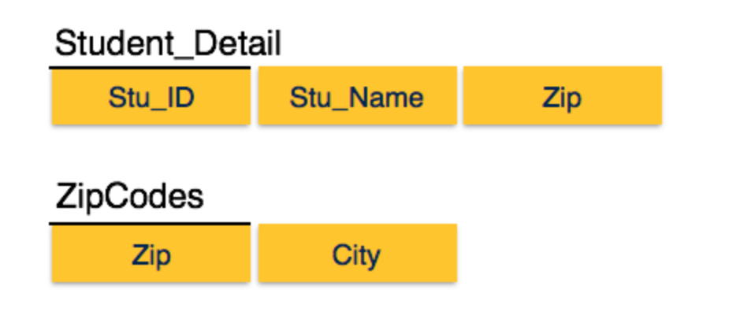

Database Normalization¶
วัตถุประสงค์¶
- Normalization
- Function dependency (FD)
- ประเภทของ Function dependency
- 1NF - First Normal Form
- 2NF - Second Normal Form
- 3NF - Third Normal Form
- BCNF - Boyce-codd Normal Form
- 4NF - Fourth Normal Form
- 5NF - Fifth Normal Form
1. Normalization¶
Normalization คือวิธีการใช้ในการตรวจสอบและแก้ปัญหาทางด้านความซ้ำช้อนของข้อมูล และความผิดพลาดจากการเพิ่มหรือลบข้อมูล โดยการดำเนินการให้ข้อมูลในแต่ละ Relation อยู่ในหน่วยที่เล็กที่สุด ในความสัมพันธ์
- Relation schema
ในความสำพันธ์หนึ่งๆ จะอธิบายโครงสร้างของ relation ได้จากชื่อของ relation และ attribute ต่าง ของ relation
R ( A1, A2, … An)
เช่น:
Student ( Scode, Name, Surname, Bithday, Faculty)
Course ( Ccode, SubjName, Credit, Instructor, Textbook)
| Scode | Name | Surname | Birthday | Faculty |
|---|---|---|---|---|
| 20101214 | John | Harris | 14/5/1979 | Engineering |
| 56210121 | Paul | Martin | 2/11/1982 | Management |
| 4295412 | Lee | Kevin | 1/3/1983 | Science |
| 20101239 | Jim | Jackson | 21/7/1981 | Letter |
- Function dependency
Functional dependency (FD) คือความสัมพันธ์ระหว่าง attribute ใน Relation โดยมีลักษณะความสัมพันธ์คือ ข้อมูลของ attribute หนึ่ง (หรือกลุ่มหนึ่ง) ขึ้นอยู่กับค่าของ attribute หนึ่ง (หรือกลุ่มหนึ่ง) อย่างเป็นฟังก์ชัน
attribute X และ Y อยู่ใน relation R ดังนั้น X -> Y อ่านว่า Y ขึ้นตรงต่อ X อย่างเป็นฟังก์ชัน หรือ X กำหนดค่า Y
- X คือ ตัวกำหนด หรือ Determinant attribute
- Y คือ Dependent attribute
นิยาม:
X -> Y ก็ต่อเมื่อ ทุกค่าของ X ใน R สัมพันธ์กับค่าของ Y เพียงค่าเดียว นั่นคือ หากรู้ว่าค่า X เป็นอะไร ก็จะระบุค่า Y ได้
เช่น:
SCode -> SName, Faculty, Birthday
Birthday -> Age
{ อำเภอ, จังหวัด } -> รหัสไปรษณีย์
รหัสไปรษณีย์ -> { อำเภอ, จังหวัด }
3 ชนิดของ Function dependency¶
- Trivial fucntion dependency
นิยาม:
A->B เป็น trivial function dependency ถ้า B เป็น subset ของ Aเช่น:
{Student_id,Student_name} -> Student_id เป็น trivial function dependency เนื่องจาก Student_id เป็น subset ใน เซต {Student_id,Student_name} {emp_id,emp_name} -> emp_name ( emp_name เป็น subset ใน {emp_id,emp_name})
- Non-trival function dependency
นิยาม:
A->B จะต้องเป็น function dependency ที่ B ไม่อยู่ใน subset ของ Aเช่น:
emp_id -> emp_name ( emp_name ไม่ใช้ subset ใน {emp_id}) emp_id -> emp_address ( emp_address ไม่ใช้ subset ใน {emp_id})
- Multivalued dependency
นิยาม:
เกิดขึ้นเมือค่าของ function(x) มี dependency value มากกว่า ค่าเดียวในตารางเช่น:
โรงงานจักรยาน ผลิตจักรยานสี black,white ในแต่ละ model bike_model ->> manuf_year bike_model ->> color
bike_model manuf_year color M1001 2007 Black M1001 2007 Red M2012 2008 Black M2012 2008 Red M2222 2009 Black M2222 2009 Red
4. 1NF - First Normal Form¶
ลักษณะของ 1NF ค่าในตารางจะต้องมีลักษณะ เป็น atomic มีค่าเดียวในแต่ละ attribute
| Course | Content |
|---|---|
| Programming | Java, C++ |
| Web | HTML, PHP, ASP |
จัดตารางใหม่
| Course | Content |
|---|---|
| Programming | Java |
| Programming | c++ |
| Web | HTML |
| Web | PHP |
| Web | ASP |
5. 2NF - Second Normal Form¶
- Prime attribute จำแนกค่าของ attribute ว่าค่าใดเป็น Candidate-key ถือเป็น attribute หลัก (Prime attribute)
- Non-prime attribute เป็นค่า attribute ที่ไม่ใช่ ค่า prime attribute

แยกตารางตามความสัมพันธ์ ของ prime attribute ออกมาได้ดังนี้
6. 3NF - Third Normal Form¶
- 3NF จะต้องอยู่ในรูปของ 2NF ก่อน การพิจารณาใน 3NF จะพิจารณาส่วนของ non-prime attribute มีความสำพันธ์ แบบ transitive dependency
- Std_id -> City, city -> zip ดังนั้น Std_id สามารถระบุ Zip ได้โดยผ่าน attribute City

ทำให้สามารถแยกย่อยตารางได้ จาก transitive dependency
7. BCNF - Boyce-codd Normal Form¶
เป็นส่วนขยายของ 3NF โดยมีนิยามว่า:
สำหรับ non-trival fuctional dependency ใดๆ x -> y แล้ว x จะต้องมีคุณสมบัติของ Super key :: Stu_ID → Stu_Name, Zip Zip → City